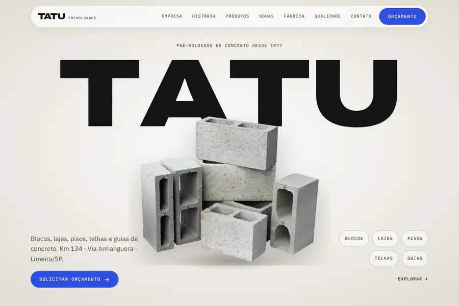
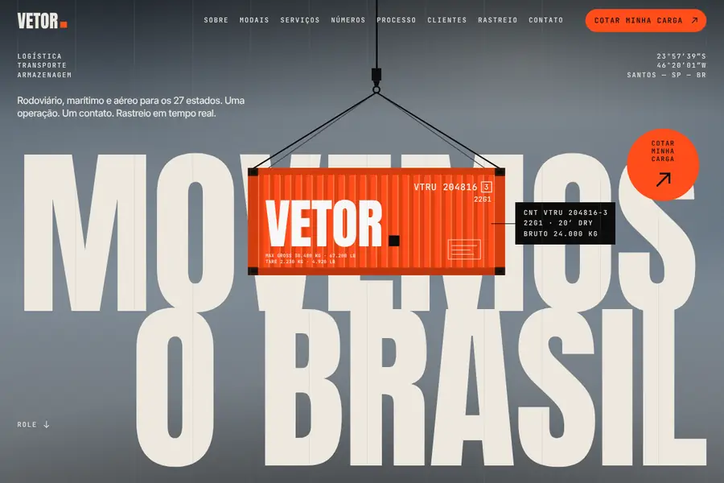
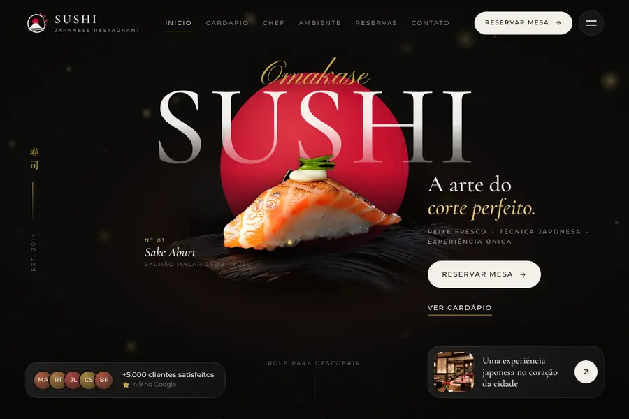
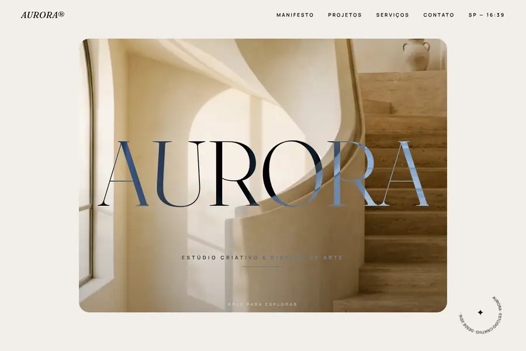
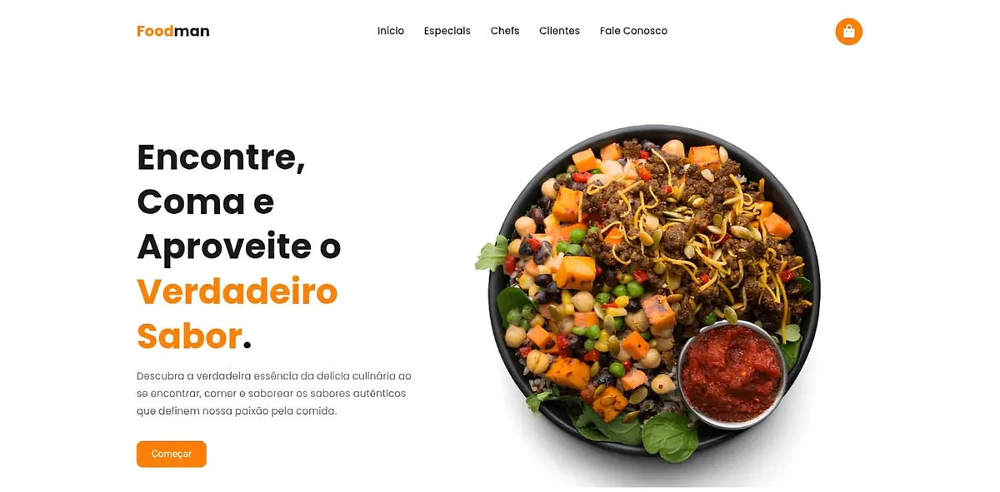
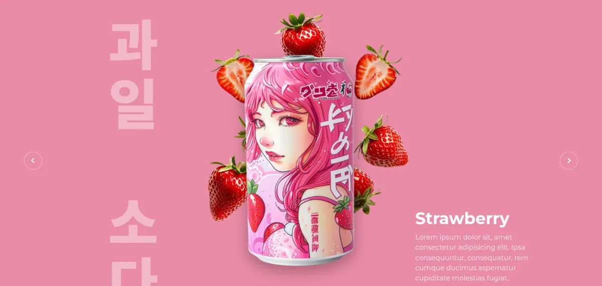
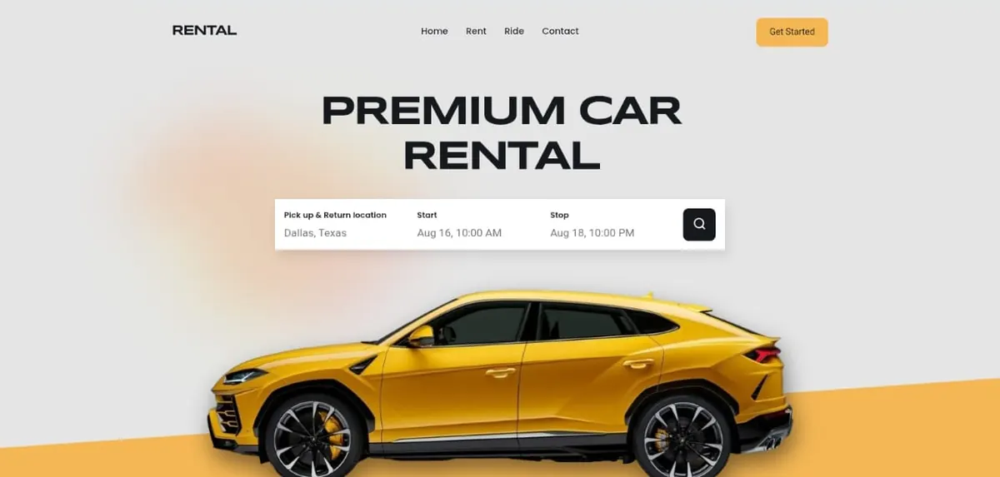

Sites institucionais
Um site profissional que apresenta sua empresa, seus produtos e seus diferenciais, e passa confiança para quem pesquisa você no Google.

Comecei a estudar desenvolvimento front-end em 2024, com HTML, CSS e JavaScript. Os estudos viraram prática rápido: recriei layouts, construí landing pages e fui incorporando React, TypeScript e animações até dominar o ciclo completo de um site, do design à publicação.
Hoje trabalho como freelancer, atendendo cada cliente diretamente. Já fui responsável por projetos grandes, como o site institucional da Tatu Pré-Moldados, indústria de concreto com quase 50 anos de mercado. Em todo projeto cuido de três coisas: velocidade, experiência no celular e SEO, porque um site bonito que ninguém encontra não traz cliente.
Veja meus projetosSites feitos sob medida para empresas de Limeira/SP e de todo o Brasil, com código próprio, sem templates genéricos.
Um site profissional que apresenta sua empresa, seus produtos e seus diferenciais, e passa confiança para quem pesquisa você no Google.
Páginas com um único objetivo: transformar o visitante em contato, venda ou cadastro. Ideais para campanhas e lançamentos.
Código limpo, carregamento rápido e estrutura que o Google entende, para o seu site aparecer quando o cliente procura pelo que você vende.
Site atual lento ou quebrando no celular? Eu corrijo, atualizo o conteúdo e deixo tudo funcionando em qualquer tela.







As ferramentas que uso no dia a dia. Clique em uma para saber mais.
Projetos para clientes diretos
Desenvolvo sites institucionais e landing pages do zero para empresas e profissionais, cuidando do layout, do código, do SEO e da publicação. Entre os projetos está o site da Tatu Pré-Moldados, feito com React, TypeScript e animações guiadas pelo scroll.
Projetos práticos e estudos avançados
Aprofundei em JavaScript e React, responsividade e animações, colocando tudo em prática em projetos completos, como as landing pages Foodman e Fruit Soda e o site de aluguel de carros.
Estudos por conta própria
Comecei pela base: HTML, CSS e JavaScript, HTML semântico, layouts com Flexbox e Grid e boas práticas de acessibilidade, a fundação de todo site bem feito.
Conte o que você precisa: um site novo, uma landing page ou melhorar o que já existe. Eu respondo pessoalmente, com os próximos passos e um orçamento sem compromisso.